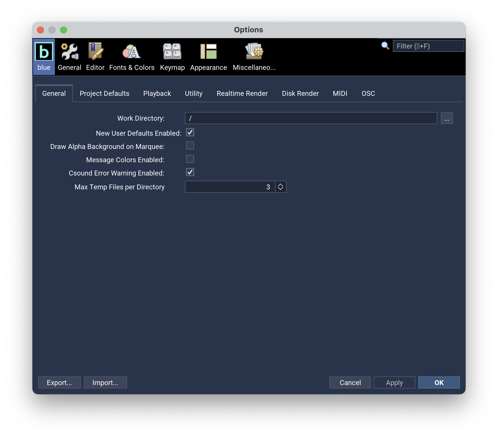
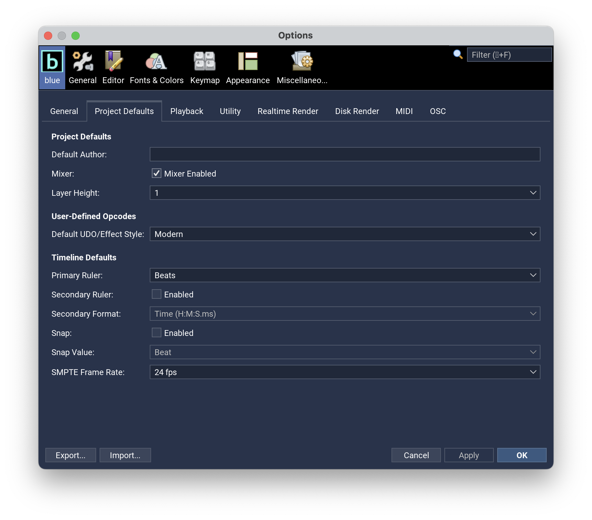
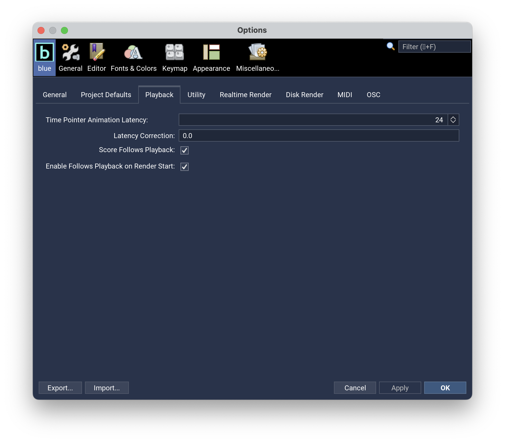
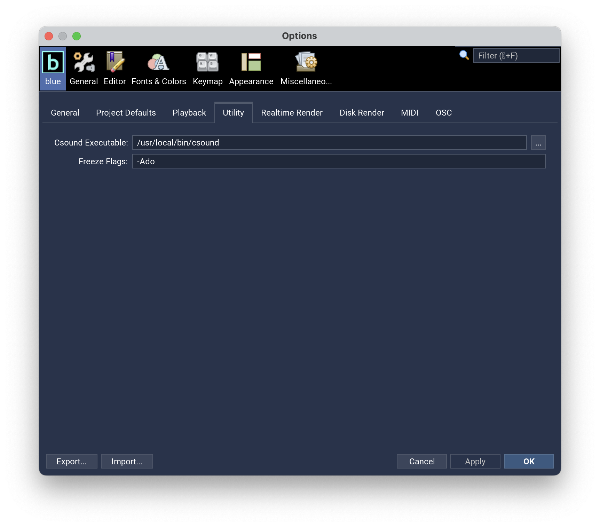
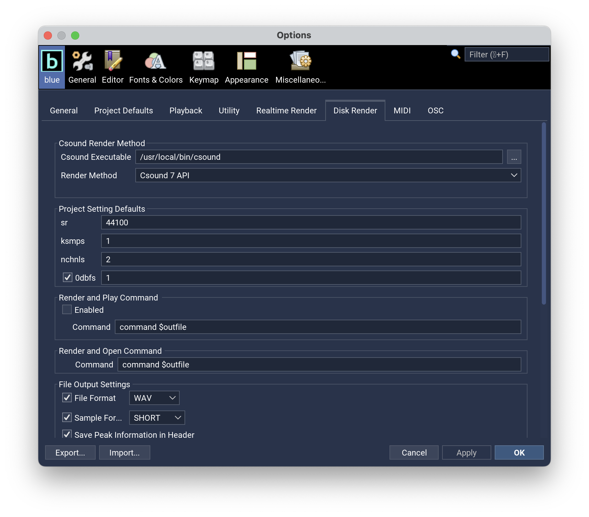
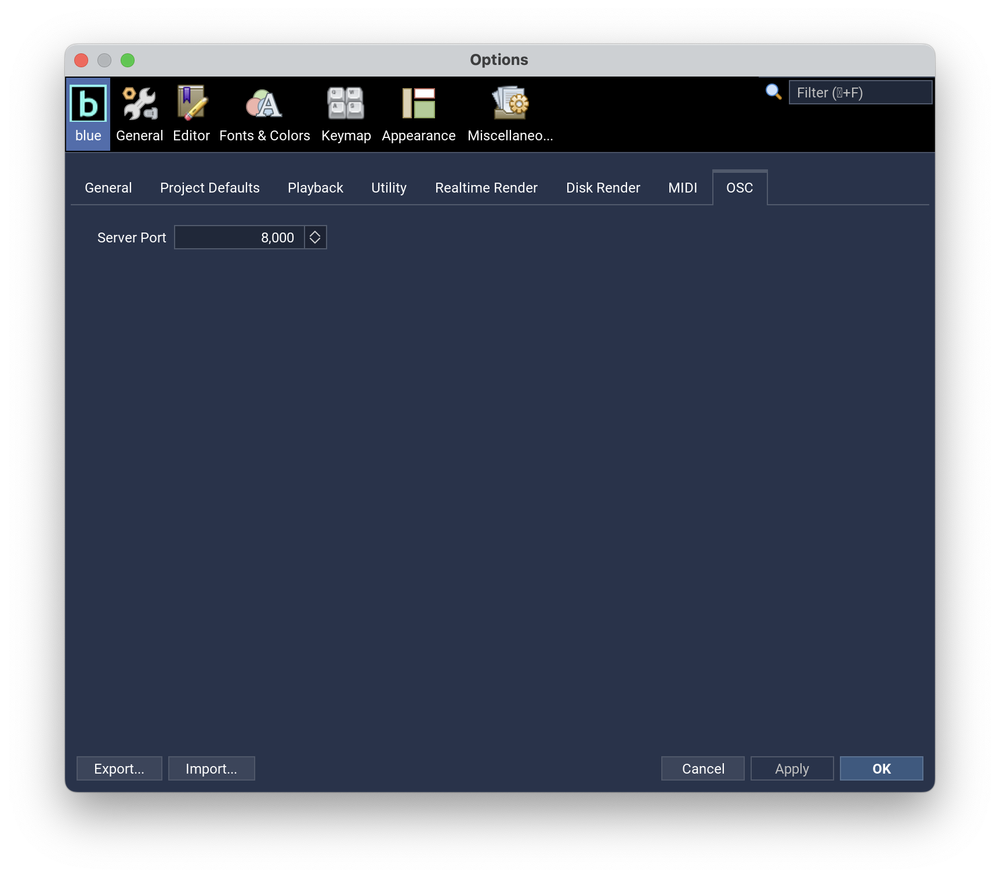

Setting Up Program Options
The first thing you'll want to do is set up your Program Options. Some settings are required for features of Blue to work (e.g., Render Settings), while others are there to help setup your project defaults and save you time when creating new projects.
To open up the Program Options dialog, go to the File menu and click on "Program Options".
General

- Work Directory
- The default directory that Blue should open when loading/saving Blue project files.
- Maintain Last Window State
- Enables saving of window location and size. If enabled, upon starting of program, window states will be restored.
- New User Defaults Enabled
-
Enables default text for different objects in Blue. Curently this affects:
- CodeRepository - when adding new Code Snippet
- Draw Flat SoundObject Borders
- Enables older flat drawing style of SoundObject borders on the score timeline.
- Draw Alpha Background on Marquee
- If this is enabled, when selecting a group of SoundObjects on the Score Timeline the marquee that is drawn to show the selection area will paint with an alpha-transparent white background. (May slow down performance when enabled.)
- Show Csound Output
- If this is enabled, output from rendering with Csound will be shown in the Csound Output Dialog (accessible from the Window menu or available with the F7 shortcut). If disabled, output will be shown in the std.out of the console that opens when Blue starts. (If the Blue starter script has been modified not to show the console by using javaw instead of java, then the output will not be able to be seen). It is recommended to enable this option.
- Message Colors Enabled
- Since Csound5, the default for printed messages is to show them with colors by using ANSI text modifiers. However, this only works within ANSI-compliant consoles, and does not work within Blue's Csound Output Dialog. It is recommended to keep this disabled if the "Show Csound Output" option is enabled.
- Language
- Which language to use for Blue. This affects the labels of the User Interface, messages given to the user in dialog boxes, menu titles, etc. (Translation files may not always be up to of date so some UI items may not be translated when not in English.)
Project Defaults

These settings are used whenever new projects are created as defaults for the project, unless a default.blue file is found in the user's Blue home directory, in which case the settings from the default.blue file are used.
- Author
- Default author to use in new projects.
- Mixer Enabled
- Enable using the Blue Mixer in new projects by default.
Playback

- Time Pointer Animation Rate
- Rate of animation for time pointer to update when playing back in realtime, expressed in frames per second. For example, the default value of 20 means the time pointer is updated 20 times per second, giving a smooth animation rate. Slower values may be desirable on slower computers if the playback pointer is affecting performance.
- Latency Correction
- Float value in seconds to use as a correction for audio latency in the user's sound playback mechanism. For example, if latency is quite bad on your soundcard and there is a delay of .5 seconds between when audio is passed to your soundcard and when the audio is actually realized from the DAC, the visual time pointer for Blue may appear ahead in time of what is being heard. Using a .5 value for latency correction would correct for this.
Utility

- Csound Executable
-
This is the command for what version of Csound to execute when Blue uses utilities that depend on Csound (for example, freezing SoundObjects, the SoundFont Viewer utility). The default value of "csound" works if you have a version of Csound in your path named "csound". You may use any command here that would call Csound that would work as if you were running csound from a terminal.
Note
The value defined for Csound Executable should only be the command to call Csound and no other flags should be added here.
- Freeze Flags
- These are the flags for Csound that Blue uses when performing SoundObject freezing. Defaults are "-Ado" for Mac and "-Wdo" for all other operating systems. Users may wish to modify this value if they would their frozen soundObjects to be in a different format, i.e. 32-bit float soundfiles.
Realtime

Project Settings
- Csound Executable
-
This is a command for what version of Csound to execute when Blue renders the project in realtime. The default value of "csound" works if you have a version of Csound in your path named "csound". You may use any command here that would call csound that would work as if you were running csound from a terminal.
Using the button marked "..." on the right will open up a file dialog so that you can find and select the Csound executable to use to run Csound.
If you are using the API, you still need to have something set here. You can set it to "csound" in that case.
Note
The value defined for Csound Executable should only be the command to call Csound and no other flags should be added here.
- Render Method
-
Choose which render service to use for rendering the project. When the program loads, Blue will first try to see if the Csound 6 API is available and if so, show that option here. If it can not find the Csound 6 API, it will search for the Csound 5 API and show that option here instead if it is found. If neither is found, the Commandline Runner option will always be available to use.
Note: If you have both Csound 5 and Csound 6 installed, you can force Blue to ignore Csound 6 on load by adding "-J-DDISABLE_CSOUND=true" to the blue/etc/blue.conf file in the default_options section. On OSX, this will be in blue.app/Contents/Resources/blue/etc/blue.conf.
- sr
- Default sr to use for realtime settings in new projects.
- ksmps
- Default ksmps to use for realtime settings in new projects.
- 0dbfs
- Default value to use for 0dbfs. Also, the checkbox denotes whether projects should use 0dbfs by default or not.
Devices
- Audio Driver
-
Driver to use for audio input and output. This is equivalent to using the --rtaudio= flag setting on the commandline.
Enabling the checkbox determines if this value will be used at all when rendering, and if so, will use the value from the dropdown as the driver setting.
- Audio Out
-
Audio output device to use. Equivalent to using -o flag setting on the commandline. This setting is dependent on the setting used on the audio driver setting. Using a value of "dac" will use the default device for the driver.
The value of this setting will be used for all projects that set "Audio Out" enabled in the project-level realtime render settings.
By selecting the [...] button to the right of this field, Blue will try to detect what devices are available for the chosen Audio Driver. If Blue is able to find the devices, a popup dialog will appear with a list of available devices. Selecting from the popup will then populate the textfield with the correct device string that Csound will use to choose the device requested.
Note
If the driver is chosen but not enabled for use via its checkbox, when auto-detecting, Blue will check for devices against the default driver and not necessarily what is in the dropdown. Please be sure that if you are planning to use the auto-detect feature with a particular driver that you also select the driver and enable it with the checkbox.
Enabling the checkbox determines if this device will be enabled by default for new projects.
- Audio In
-
Audio input device to use. Equivalent to using -i flag setting on the commandline. This setting is dependent on the setting used on the audio driver setting. Using a value of "adc" will use the default device for the driver.
The value of this setting will be used for all projects that set "Audio In" enabled in the project-level realtime render settings.
By selecting the [...] button to the right of this field, Blue will try to detect what devices are available for the chosen Audio Driver. If Blue is able to find the devices, a popup dialog will appear with a list of available devices. Selecting from the popup will then populate the textfield with the correct device string that Csound will use to choose the device requested.
Note
If the driver is chosen but not enabled for use via its checkbox, when auto-detecting, Blue will check for devices against the default driver and not necessarily what is in the dropdown. Please be sure that if you are planning to use the auto-detect feature with a particular driver that you also select the driver and enable it with the checkbox.
Enabling the checkbox determines if this device will be enabled by default for new projects.
- MIDI Driver
-
Driver to use for MIDI input and output. This is equivalent to using the --rtmidi= flag setting on the commandline.
Enabling the checkbox determines if this value will be used at all when rendering, and if so, will use the value from the dropdown as the driver setting.
- MIDI Out
-
MIDI output device to use. Equivalent to using -Q flag setting on the commandline. This setting is dependent on the setting used on the MIDI driver setting.
The value of this setting will be used for all projects that set "MIDI Out" enabled in the project-level realtime render settings.
By selecting the [...] button to the right of this field, Blue will try to detect what devices are available for the chosen MIDI Driver. If Blue is able to find the devices, a popup dialog will appear with a list of available devices. Selecting from the popup will then populate the textfield with the correct device string that Csound will use to choose the device requested.
Note
If the driver is chosen but not enabled for use via its checkbox, when auto-detecting, Blue will check for devices against the default driver and not necessarily what is in the dropdown. Please be sure that if you are planning to use the auto-detect feature with a particular driver that you also select the driver and enable it with the checkbox.
Enabling the checkbox determines if this device will be enabled by default for new projects.
- MIDI In
-
MIDI input device to use. Equivalent to using -M flag setting on the commandline. This setting is dependent on the setting used on the audio driver setting.
The value of this setting will be used for all projects that set "MIDI In" enabled in the project-level realtime render settings.
By selecting the [...] button to the right of this field, Blue will try to detect what devices are available for the chosen MIDI Driver. If Blue is able to find the devices, a popup dialog will appear with a list of available devices. Selecting from the popup will then populate the textfield with the correct device string that Csound will use to choose the device requested.
Note
If the driver is chosen but not enabled for use via its checkbox, when auto-detecting, Blue will check for devices against the default driver and not necessarily what is in the dropdown. Please be sure that if you are planning to use the auto-detect feature with a particular driver that you also select the driver and enable it with the checkbox.
Enabling the checkbox determines if this device will be enabled by default for new projects.
Buffer Settings
- Software Buffer
-
Size of software sample buffer to use (-b). For more information, see CommandFlags section of Csound manual for settings.
Enabling the checkbox determines if this value will be used at all when rendering.
- Hardware Buffer
-
Size of hardware sample buffer to use (-B). For more information, see CommandFlags section of Csound manual for settings.
Enabling the checkbox determines if this value will be used at all when rendering.
Message Level
- Note Amplitudes
- Enables note amplitude messages from Csound (-m1)
- Out-of-Range Messages
- Enables samples out of range messages from Csound (-m2)
- Warnings
- Enables warning messages from Csound (-m4)
- Benchmark Information
- Enables benchmark information from Csound (-m128)
Advanced Settings
- Advanced Settings
- Extra flags to append to the commandline that might not be covered by options in the UI. Pressing the [?] button will open the documentation for the Csound command flags.
Disk Render

Project Settings
- Csound Executable
-
This is a command for what version of csound to execute when Blue renders the project to disk. The default value of "csound" works if you have a version of Csound in your path named "csound". You may use any command here that would call csound that would work as if you were running csound from a terminal.
Using the button marked "..." on the right will open up a file dialog so that you can find and select the csound executable to use to run Csound.
Note
The value defined for Csound Executable should only be the command to call Csound and no other flags should be added here.
- Render Method
-
Choose which render service to use for rendering the project. When the program loads, Blue will first try to see if the Csound 6 API is available and if so, show that option here. If it can not find the Csound 6 API, it will search for the Csound 5 API and show that option here instead if it is found. If neither is found, the Commandline Runner option will always be available to use.
Note: If you have both Csound 5 and Csound 6 installed, you can force Blue to ignore Csound 6 on load by adding "-J-DDISABLE_CSOUND=true" to the blue/etc/blue.conf file in the default_options section. On OSX, this will be in blue.app/Contents/Resources/blue/etc/blue.conf.
- sr
- Default sr to use for disk render settings in new projects.
- ksmps
- Default ksmps to use for disk render settings in new projects.
- nchnls
- Default nchnls to use for disk render settings in new projects.
- 0dbfs
- Default value to use for 0dbfs. Also, the checkbox denotes whether projects should use 0dbfs by default or not.
Render and Play Command
- Enabled
- Enable using custom play command when using "Render and Play". If not enabled, Blue's built-in audio player will be used once the project is finished rendering to disk.
- Command
- Command to call after finished rendering a project. The command line
given should use the $outfile property where the name of the
generated audio file should be passed to the program. For example,
to open the rendered audio with VLC on Mac OSX, you can use this
command line:
open -a VLC $outfile
File Output Settings
- File Format
-
File format to use (i.e. WAV, AIFF, AU, etc.)
Enabling the checkbox determines if this value will be used at all when rendering.
- Sample Format
-
Sample format to use. The default of SHORT is the same as 16-bit integer audio (the same as used for CD's). Other formats are available in the dropdown to use.
Enabling the checkbox determines if this value will be used at all when rendering.
- Save Peak Information in Header
-
Save the peak information in the file header.
Enabling the checkbox determines if this value will be used at all when rendering.
- Dither Output
-
Use dither on output.
Enabling the checkbox determines if this value will be used at all when rendering.
- Rewrite Header while Rendering
-
Rewrite the file header while rendering. This makes it possible to play the audio file in the middle of a render and is useful when the rendering of the project will take a very long time. However, it does slow down overall render time.
Enabling the checkbox determines if this value will be used at all when rendering.
Message Level
- Note Amplitudes
- Enables note amplitude messages from Csound (-m1)
- Out-of-Range Messages
- Enables samples out of range messages from Csound (-m2)
- Warnings
- Enables warning messages from Csound (-m4)
- Benchmark Information
- Enables benchmark information from Csound (-m128)
Advanced Settings
- Advanced Settings
- Extra flags to append to the commandline that might not be covered by options in the UI. Pressing the [?] button will open the documentation for the Csound command flags.
MIDI

These settings are for blue's MIDI input, used with BlueLive. The table shows what devices are currently available, and whether they are enabled for use with BlueLive or not. You can use the "rescan" button to search for devices if you have just plugged in a device.
OSC

This allows you to set what port Blue will listen to for incoming OSC messages. Defaults to 8000. The following messages are understood by Blue:
-
/score/play
-
/score/stop
-
/score/rewind
-
/score/markerNext
-
/score/markerPrevious
-
/blueLive/onOff
-
/blueLive/recompile
-
/blueLive/allNotesOff
-
/blueLive/toggleMidiInput